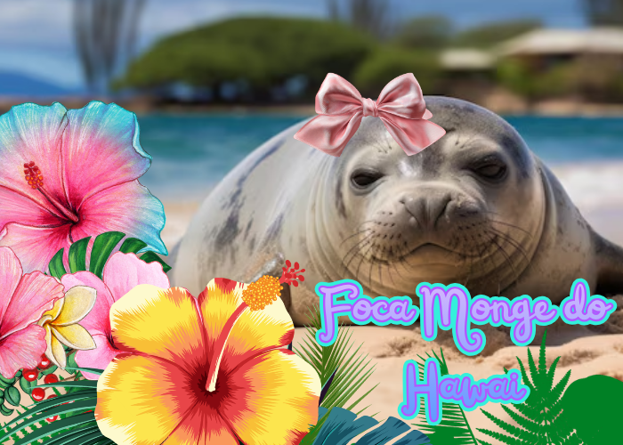
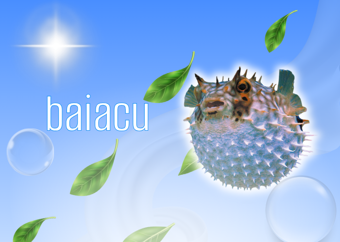
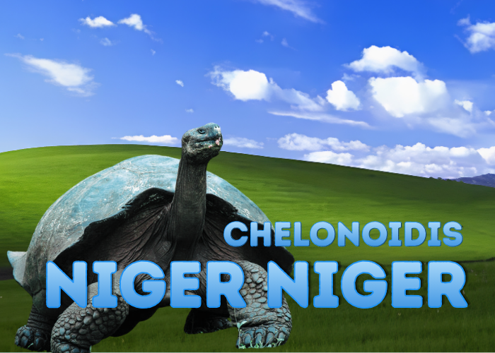

Focas do Ártico enfrentam risco crescente de extinção devido ao derretimento do gelo
Mudanças climáticas aceleram a perda de habitat e colocam espécies emblemáticas do Ártico sob ameaça
O rápido derretimento do gelo marinho no Ártico está levando algumas espécies de focas cada vez mais perto da extinção. Segundo a atualização mais recente da Lista Vermelha da União Internacional para a Conservação da Natureza (IUCN), três espécies dependentes do gelo tiveram sua situação de conservação agravada: a foca-de-capuz (Cystophora cristata), a foca-da-Groenlândia (Pagophilus groenlandicus) e a foca-barbuda (Erignathus barbatus).
A foca-de-capuz passou da categoria Vulnerável para Em Perigo, enquanto a foca-da-Groenlândia e a foca-barbuda saíram de Pouco Preocupante para Quase Ameaçada. Segundo especialistas da IUCN, a principal causa desse declínio é a perda do gelo marinho provocada pelo aquecimento global.
De acordo com a bióloga marinha Kit Kovacs, vice-líder do Grupo de Especialistas em Pinípedes da IUCN e pesquisadora do Instituto Polar Norueguês, a deterioração do habitat de reprodução é o principal fator por trás da queda das populações. As focas dependem do gelo para dar à luz, amamentar seus filhotes, descansar e acessar áreas de alimentação. Quando o gelo se rompe ou derrete antes do tempo, muitos filhotes não sobrevivem.
Os cientistas alertam que o Ártico está aquecendo aproximadamente quatro vezes mais rápido do que a média global. Esse fenômeno reduz drasticamente a extensão e a duração da cobertura de gelo marinho, comprometendo todo o equilíbrio ecológico da região.
O problema não afeta apenas as focas. Como elas ocupam uma posição importante na cadeia alimentar, sua redução pode impactar diversas espécies, incluindo ursos polares, que dependem delas como principal fonte de alimento, além de algumas populações de baleias e comunidades indígenas que vivem no Ártico. A perda do gelo também facilita a expansão de atividades humanas, como navegação, exploração de petróleo e transporte marítimo, aumentando os riscos de poluição, ruído e perturbação dos ecossistemas locais.
Especialistas destacam que o cenário observado no Ártico pode se repetir em outras regiões polares. A diminuição contínua do gelo ameaça diferentes mamíferos marinhos que dependem desse ambiente para sobreviver, tornando as mudanças climáticas uma das maiores ameaças à biodiversidade mundial.
Em comunicado divulgado durante o Congresso Mundial da Natureza da IUCN, a organização ressaltou que a situação das focas árticas evidencia a urgência de medidas globais para reduzir as emissões de gases de efeito estufa. Segundo os pesquisadores, sem uma desaceleração significativa do aquecimento global, a perda de habitat tende a se intensificar nas próximas décadas, colocando mais espécies em risco de desaparecimento.
A foca-de-capuz passou da categoria Vulnerável para Em Perigo, enquanto a foca-da-Groenlândia e a foca-barbuda saíram de Pouco Preocupante para Quase Ameaçada. Segundo especialistas da IUCN, a principal causa desse declínio é a perda do gelo marinho provocada pelo aquecimento global.
De acordo com a bióloga marinha Kit Kovacs, vice-líder do Grupo de Especialistas em Pinípedes da IUCN e pesquisadora do Instituto Polar Norueguês, a deterioração do habitat de reprodução é o principal fator por trás da queda das populações. As focas dependem do gelo para dar à luz, amamentar seus filhotes, descansar e acessar áreas de alimentação. Quando o gelo se rompe ou derrete antes do tempo, muitos filhotes não sobrevivem.
Os cientistas alertam que o Ártico está aquecendo aproximadamente quatro vezes mais rápido do que a média global. Esse fenômeno reduz drasticamente a extensão e a duração da cobertura de gelo marinho, comprometendo todo o equilíbrio ecológico da região.
O problema não afeta apenas as focas. Como elas ocupam uma posição importante na cadeia alimentar, sua redução pode impactar diversas espécies, incluindo ursos polares, que dependem delas como principal fonte de alimento, além de algumas populações de baleias e comunidades indígenas que vivem no Ártico. A perda do gelo também facilita a expansão de atividades humanas, como navegação, exploração de petróleo e transporte marítimo, aumentando os riscos de poluição, ruído e perturbação dos ecossistemas locais.
Especialistas destacam que o cenário observado no Ártico pode se repetir em outras regiões polares. A diminuição contínua do gelo ameaça diferentes mamíferos marinhos que dependem desse ambiente para sobreviver, tornando as mudanças climáticas uma das maiores ameaças à biodiversidade mundial.
Em comunicado divulgado durante o Congresso Mundial da Natureza da IUCN, a organização ressaltou que a situação das focas árticas evidencia a urgência de medidas globais para reduzir as emissões de gases de efeito estufa. Segundo os pesquisadores, sem uma desaceleração significativa do aquecimento global, a perda de habitat tende a se intensificar nas próximas décadas, colocando mais espécies em risco de desaparecimento.
Veja também
A Encantadora das Profundezas
Lula-vampira-do-inferno encanta cientistas com estratégias surpreendentes de sobrevivência nas profundezas

Foca do Hawai sofre grande risco de extinção
Uma das espécies mais raras do planeta enfrenta ameaça de extinção devido à perda de habitat e poluição dos oceanos.

Vaquita Luta Contra a Extinção no Golfo da Califórnia
Considerada o mamífero marinho mais ameaçado do mundo, a vaquita enfrenta risco crítico de extinção devido à pesca ilegal em seu habitat natural.

Baiacu Criado em Cativeiro Pode Revolucionar o Tradicional Fugu Japonês
Sem Veneno, Baiacu Criado em Cativeiro Pode Revolucionar o Tradicional Fugu Japonês

Tartaruga-Gigante de Galápagos Luta para Sobreviver
A icônica tartaruga-gigante de Galápagos enfrenta ameaças ambientais, enquanto esforços de conservação tentam proteger a espécie.